Thuiskomen met volle goesting
Veerle Stals ontwerpt interieurs en maatwerk met pit, rond Leuven en Aarschot.
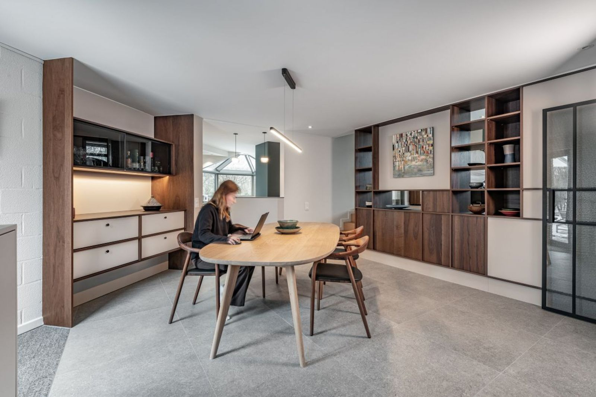
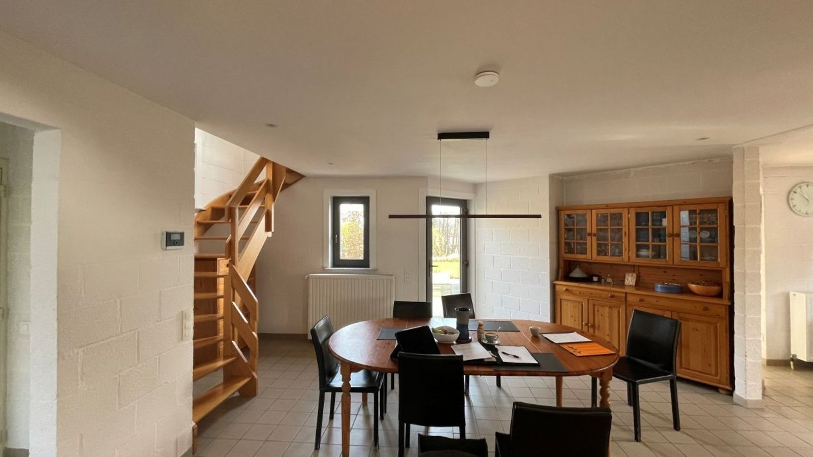
Voor NaMaatwerk meubilair is mijn specialiteit
Elk meubel krijgt het materiaal dat bij het huis past.
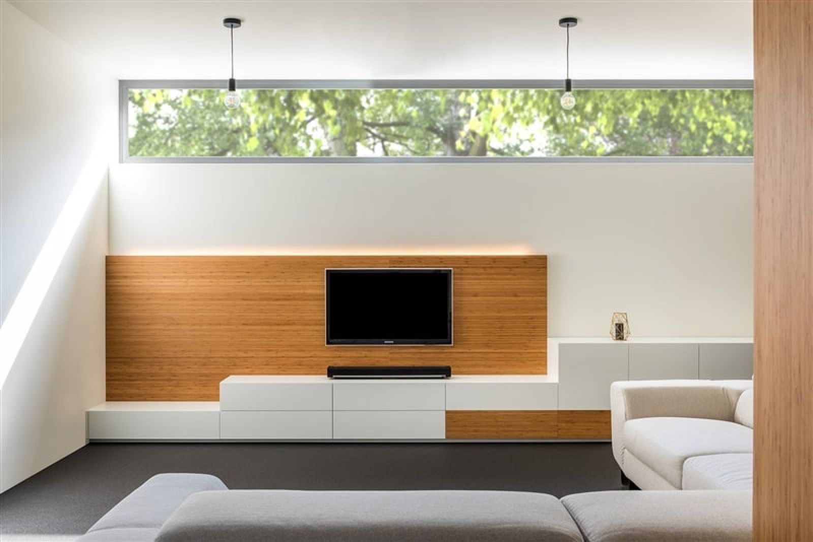
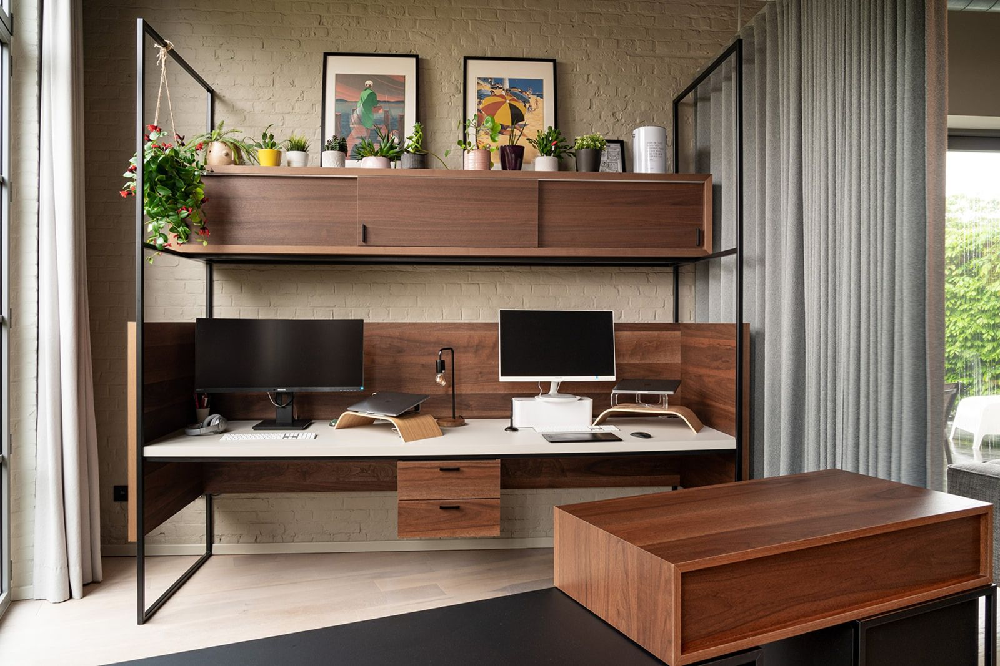
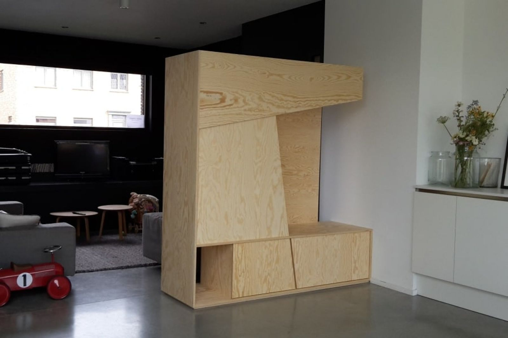
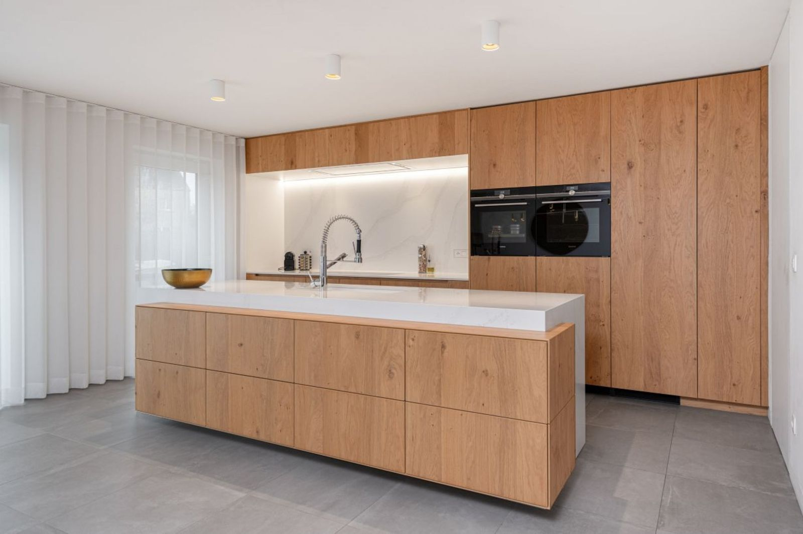
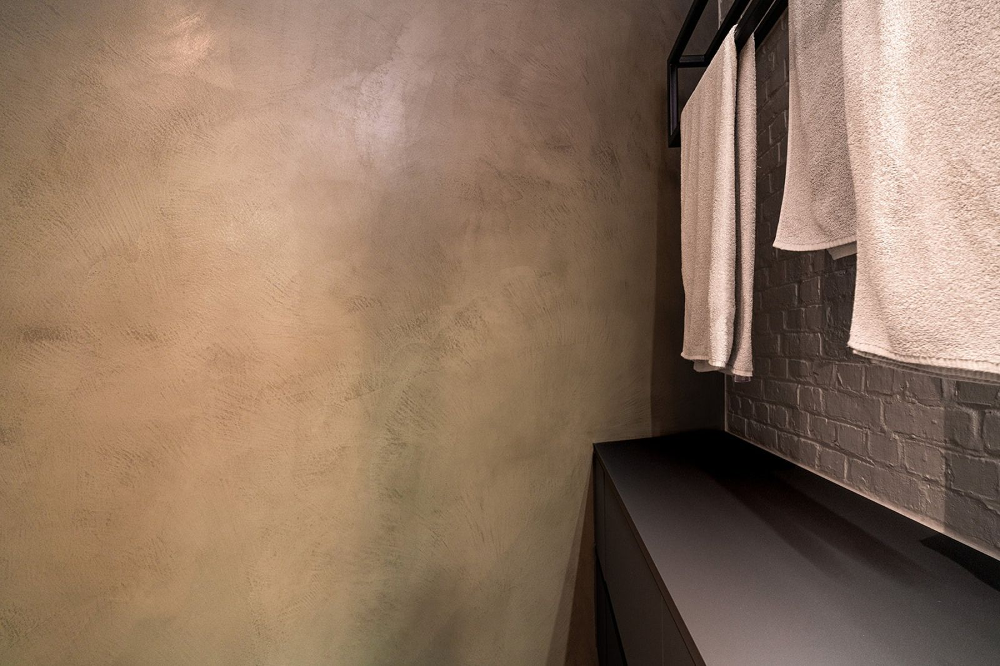
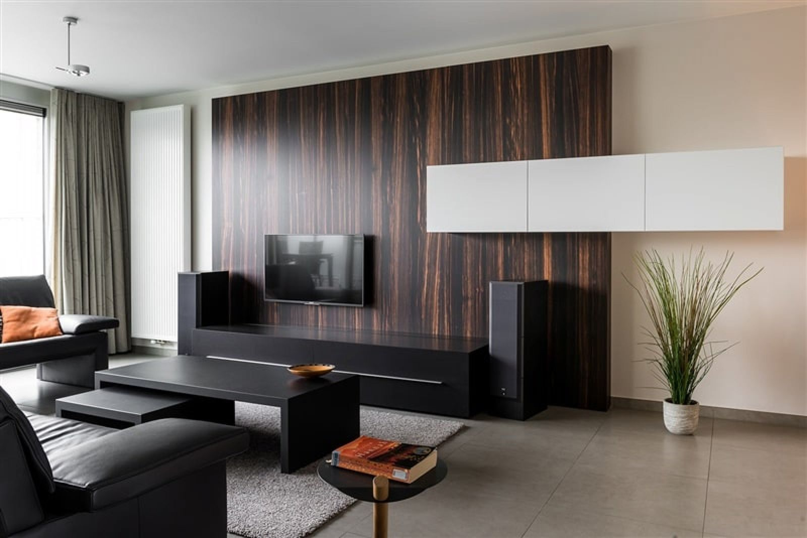
Wat wordt jouw project?
Leefruimte en keuken, renovatie
Vergunning nodig? Dan werk ik samen met een architect.
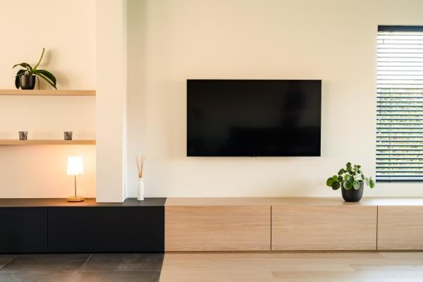
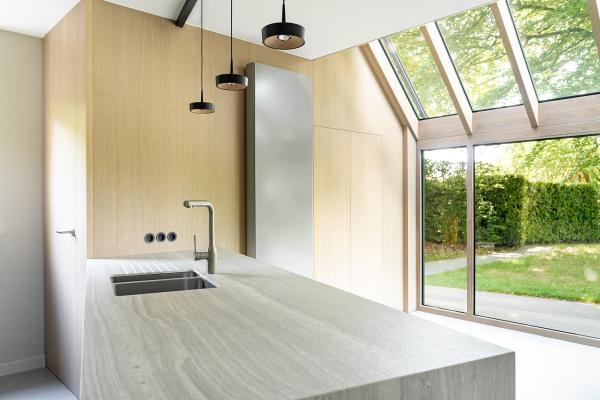
Tot het laatste likje verf
Kennismaken
Een vrijblijvend gesprek, daarna een offerte voor het conceptontwerp.
Ontwerpen
Sfeer en indeling, binnen je budget, tot je 100% tevreden bent.
Proeven
Een 3D-presentatie tot in detail toont je toekomstige inrichting.
Uitvoeren
Betrouwbare vakmensen, strikte opvolging, één aanspreekpunt.
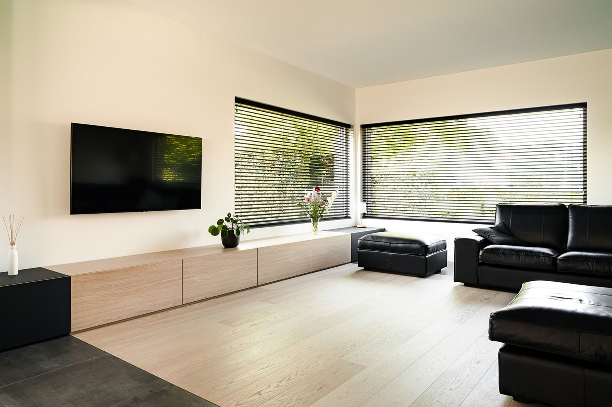
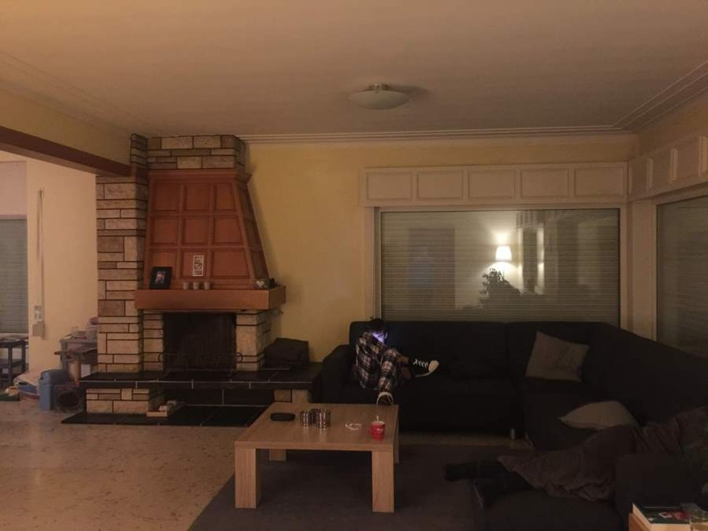
Voor NaSterk in contrast
- De haard
- Het zware haardmeubel maakt plaats voor een functioneel tv-meubel.
- De keuken
- Opengetrokken naar de leefruimte, semi-afsluitbaar met mobiele wanden.
Van zolder tot onthaalbalie
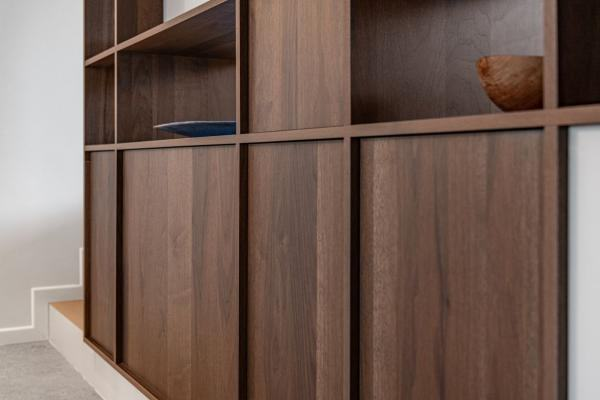
- Kunstige doorkijk
- Ingekaderde tuin
- Van donker naar licht
- Sterk in contrast
- ISHOYO luxe takeaway & delivery
- Kleurrijke eyecatcher op zolder
- De kracht van volumes
- Genieten in de orangerie
- Boeiend perspectief
- Staaltje vakmanschap
- Gezelligheid troef met accent in eik
- Thuiswerken met een vakantiegevoel
- ZEN-gevoel in nieuwbouw appartement
- Speelse twist
- Room with a view
- Renovatie badkamer met Microtopping
- Inrichting nieuwbouw appartement
- Eenheid in duplex-appartement
- Eigen plekje
- Loftinrichting met een 70's toets
- Maatwerk in Japandi stijl
- Verbetering akoestiek
- Ombouw stoere houtkachel
- Roomdivider met pit
- Onthaalbalie brengt kleur in het interieur
- Open onthaalbalie kantoorgebouw
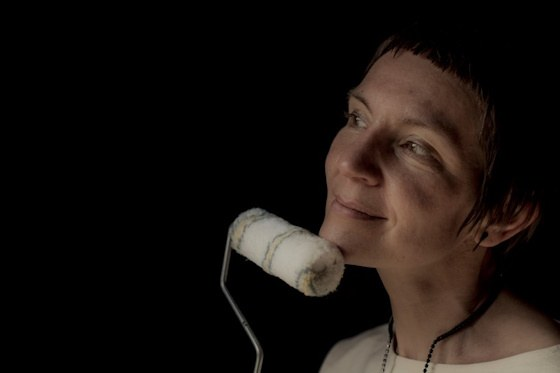
Ik ben Veerle, perfectionist met goesting
Na jaren bij verschillende architectenbureaus koos ik voor wat ik echt graag doe: interieurs ontwerpen voor mensen waarmee het klikt.
Mama van twee dochters, natuurliefhebber met oog voor detail.
- Telefoon
- 0474 28 47 22
- veerle@zint.be